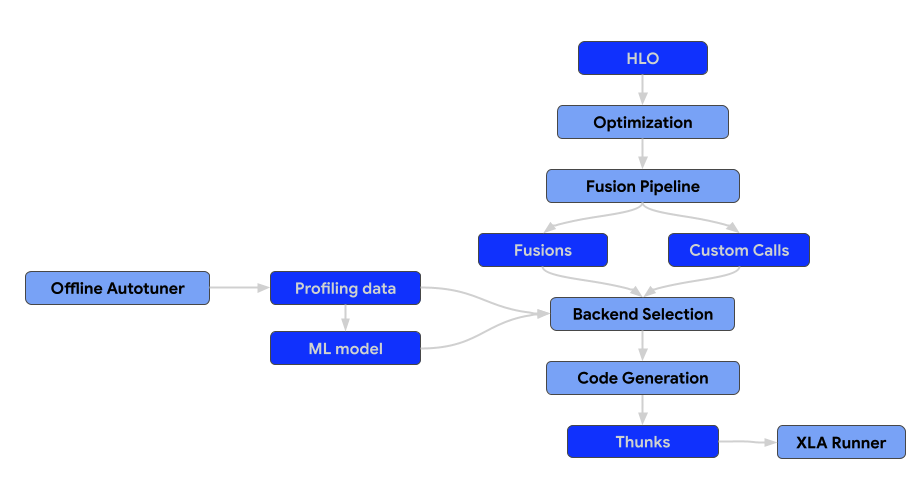

Contributing to OpenXLA#
Everyone can contribute to OpenXLA, and we value everyone’s contributions. There are several ways to contribute, including:
Answering questions on OpenXLA’s discussions forums (openxla-discuss)
Improving or expanding OpenXLA’s documentation
Contributing to OpenXLA’s code-base
Contributing in any of the above ways to the broader ecosystem of libraries built on OpenXLA
The OpenXLA project follows Google’s Open Source Community Guidelines.
Before you begin#
Sign the Contributor License Agreement#
Contributions to this project must be accompanied by a Contributor License Agreement (CLA). You (or your employer) retain the copyright to your contribution; this simply gives us permission to use and redistribute your contributions as part of the project.
If you or your current employer have already signed the Google CLA (even if it was for a different project), you probably don’t need to do it again.
Visit https://cla.developers.google.com/ to see your current agreements or to sign a new one.
Review the Code of Conduct#
This project follows Tensorflow’s Code of Conduct.
Contribution process#
Developer Guide#
For a guide on how to setup a development environment for OpenXLA, including getting code, building it, running tests and submitting changes, please refer to the Developer guide.
Contribution guide#
The architecture of the compiler consists of the following components.

Optimization passes#
Optimization passes execute transformations on the HLO to enhance computational efficiency. These transformations span from architecture-agnostic, high-level improvements to hardware-specific adjustments (e.g., for NVIDIA GPUs).
What we generally accept:#
Passes that generalize across multiple workloads and demonstrate a clear and significant positive impact on performance benchmarks.
What we generally reject:#
Passes that perform unique optimizations targeting specific models.
Fusion passes#
Fusion is a critical optimization that combines multiple HLO operations into a single kernel to reduce memory I/O and kernel launch overhead.
All fusion passes should be added to the fusion pipeline only, not before or after. That also means that the pre-optimized HLO module should not contain fusion instructions. If the fusion is formed early in the pipeline, it becomes a barrier for the optimization passes. If the fusion is formed late, then we lose an ability to select and tune the backend for the generated fusion.
Fusion into the custom calls, i.e. pattern-matching custom calls with the producers/consumers and rewriting them into the new custom calls is not allowed. In that case, it should be replaced with a proper fusion pass.
Backends & Autotuning#
Backends for the unnested ops, e.g. custom calls and fusions, should implement CodegenBackend interface.
This interface is necessary to enable optimal backend selection, because it provides the methods to include the parameters for the given HLO instructions into the search space of the autotuner.
// Returns all supported configs for the given HLO instruction.
virtual absl::StatusOr<std::vector<std::unique_ptr<BackendConfig>>>
GetSupportedConfigs(const HloInstruction& instr);
// Returns a default config for the given HLO instruction.
virtual absl::StatusOr<std::unique_ptr<BackendConfig>> GetDefaultConfig(
const HloInstruction& instr);
Runtime#
The end result of the XLA compilation pipeline is a thunk sequence that can be serialized.
All of the new thunk types should be serializable, i.e. GpuCompiler or
CpuCompiler should be able to compile the program, serialize it, so that later
the XLA runner could load and execute the program. That means that there should
be no pointers to HloInstruction or to other parts of the compiler or the
StreamExecutor.
Code standards#
Coding style: We follow Google’s code style guide. Specifically see the C/C++ and Python guides. All code submitted must strictly conform to these style guides.
Compact changes: We follow Google’s engineering practices. In particular, please observe the guide on writing compact changes. Doing so will greatly increase the speed at which you can get your code merged due to improve reviewability, and reducing the likelihood of unintentional side effects of change. Even if you have a large change, there are many strategies for breaking it up into more incremental changes.
Test Coverage: All changes should include appropriate unit tests. Unit tests should not be dependent on specific hardware (CPU, GPU, etc.) timings, and should make liberal use of mocks and fakes in order to make deterministic and focused tests. Changes seeking to extend existing code that’s currently hard to test should make appropriate improvements to testability.
All changes should include appropriate benchmark results as well in the change title to ensure the benefits are clearly understood.
When in doubt as to conventions within the code, it is always a good idea to examine pre-existing code and to try to follow the patterns already in place in OpenXLA.
Review Process#
All submissions, including submissions by project members, require review. We use GitHub pull requests for this purpose. Consult GitHub Help for more information on using pull requests.
Code must follow all standards listed above prior to review. These are not optional and it is critical that the submitter ensure their code conforms before requesting review in order to assure timely acceptance of changes.
All tests must pass. If you find that a test is broken and the issue is not related to your build environment or otherwise your changes, please contact the maintainers.
Try to avoid scope creep during the review process. This is the responsibility of both the submitter and the reviewer. If a change starts to get too large, consider breaking it up into multiple changes.
Before a change is merged, it will undergo internal testing that uses code internal to Google and other hardware vendors. This can potentially add extra steps to the review process if there are failures on internal tests that our public CI doesn’t catch. The Googler reviewing your change will communicate any internal test failures and describe what needs to be fixed.
Frequently asked questions (FAQ)#
“Can I address your comment in a future PR?”#
A frequent question with respect to infrastructure requests (or other large requests) in PRs is whether or not the change must be made in the original PR, or whether it can be done as a follow-up in a future PR.
In general, XLA does not allow PR authors to address review comments with a follow-up PR. When a reviewer decides that something needs to be addressed in a given PR, we generally expect authors to address it in that PR, even if what’s requested is a large change. This standard applies externally and also internally within Google.
There are a few reasons that XLA takes this approach.
Trust: Having earned the reviewer’s trust is a key component. In an open-source project, contributors can appear or disappear at will. After we approve a PR, reviewers have no way to ensure that any promised follow-ups actually get done.
Impact on other developers: If you have sent a PR touching a particular part of XLA, there’s a good chance other people are looking at the same part. If we accept technical debt in your PR, then everyone who’s looking at this file will be impacted by this debt until the follow-up is submitted.
Reviewer bandwidth: Deferring a change to a follow-up imposes multiple costs on our already overloaded reviewers. Reviewers will probably forget what the first PR was about while waiting for the follow-up, making the next review more difficult. Also, reviewers will have to keep track of expected follow-ups, making sure that they actually happen. If the change can be made such that it is truly orthogonal to the original PR so that some other reviewer could review it, bandwidth would be less of a problem. In our experience, this is rarely the case.